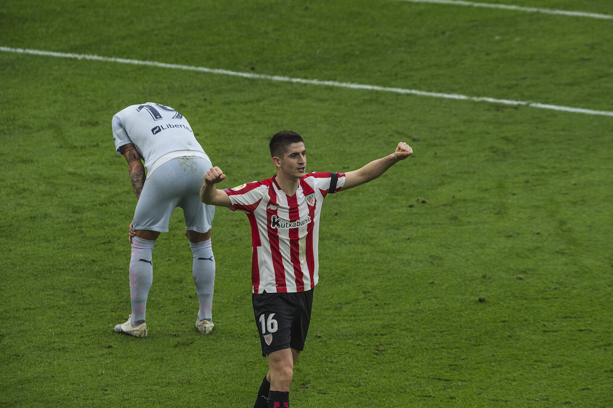

Oihan Sancet Scouting Report by Charlie Tuley - June 24, 2021
|
ctuley@umich.edu

Oihan Sancet
Club: Athletic Club
Nationality: Spain
Position(s): Attacking Midfielder, Striker, Central Midfielder
Squad Number: 16
Date of Birth (Age): April 25, 2000 (21)
Dominant Foot: Right
Height: 188cm, 6ft 2in
Market Value (via Transfermarkt): €3.16M
Contract Expires: June 30, 2022
All video clips come from Wyscout.com
Background
Born in Pamplona, Oihan Sancet joined Osasuna’s youth setup at a young age. At 15, Sancet left Osasuna’s academy to join Athletic Club’s youth program, where he’d play for both the Under-19’s and Athletic’s reserve side until he was promoted to the first team for the 2019/2020 season by then manager Gaizka Garitano.
Since then, Sancet has gone on to make 44 appearances for Athletic Club, with half of those coming with him being in the starting eleven. To date, Sancet has bagged three goals and three assists for Athletic Club, with the majority of those goal contributions coming from matches where Sancet has played up top in a striker partnership (usually with Inaki Williams, Raul Garcia, or Asier Villalibre).
This season Sancet only managed to play 1,035 minutes (11.5 90’s), as he was only favored by Marcelino towards the end of the season. Despite Athletic Club losing all of their three final games, Sancet had a successful end to the campaign and seemed to cement himself as a key player in Marcelino’s side.
When Gaizka Garitano managed Athletic Club, Sancet was mostly used as an attacking midfielder (playing the 10 role) in Garitano’s favored 4-2-3-1 formation. However, since Marcelino took over the side, he’s been using Sancet as a second striker in his 4-4-2 formation, using him to link the midfield to the final third attack.
Sancet has also made a combined five appearances with the Spanish National Team setup, spread out across the Under-18’s and the Under-21 team. He won a gold medal at the Medeterranean Games (similar to the Olympics, but only including African, European, and Asian countries located around the Medeterranean Sea) in 2018.
Shooting
While I wouldn’t consider finishing to be Sancet’s greatest asset, he is by no means “poor” in front of goal. He’s scored two goals this season from 2.9 expected goals, which is quite low for a player who plays in a role as advanced as his with Athletic Club. However, for a team that doesn’t have a talismanic goalscorer (Athletic Club’s top scorer this season was Alex Berenguer with 8 goals) and spreads out the chance creation and finishing amongst all of its forwards, this tally isn’t too bad.
Another factor that’s relevant when discussing Sancet’s shooting (and scoring) record is the amount of matches that he played this past season. While his record of two goals from 2.9 xG would be quite poor from the standpoint of a player who played 30 full matches over an entire season, Sancet only played the equivalent of 12 matches during the 2020/2021 campaign, making his goalscoring record a bit more appropriate. If we look at his tally on a per-match basis, he actually performs quite well. Sancet averaged 1.57 shots per match (0.52 on target) this season, which situates him right in that gray area that’d be high for a central midfielder and low for a striker. Since Sancet spent time playing in both of the above positions, this per 90 record checks out quite well.
One thing that really stood out to me when watching Sancet was his off-ball movement in the penalty area. He’s very good at finding small pockets of space in the box, often moving behind defenders to do so. He’ll get into players’ blind spots, making it tough for defenders to track his movements. This is actually how he scored both of his goals this season.
His lone goal from last season (the final clip) was also included.
Another noticeable attribute that Sancet possesses is his proficiency using all of his different body parts. He’s comfortable playing (and finishing) with both feet, his head, and has no problem settling the ball with his chest and thighs. This is very helpful in a squad that values crossing as part of its offensive scheme, and Sancet’s 6’2’’ frame only makes him an even greater asset in this area.
Passing
Passing is an area where Sancet could definitely use some work. All aspects of his passing are wildly inconsistent, he’ll ping a 50 yard lobbed ball over the opposition defense and miss a three yard pass all in the same passage of play.
He completes his passes with 73.8% consistency, which is quite low for a midfielder known for his technical abilities. He also doesn’t attempt as many passes as most midfielders, mainly due to the spaces that he tends to occupy; regardless of what position he’s starting in (whether it be striker or central midfielder), he’ll try to receive the ball in between the opposition’s midfield and defensive lines. This makes it tough for him to get on the ball regularly, but when he does, it’s in dangerous positions.
Creatively, Sancet isn’t too bad. The Spaniard averages 1.74 shot-creating actions per 90 from passes, which is relatively high. He also averages 1.04 passes that directly result in a shot each match, which is to be expected from a player who plays in a role as advanced as his. The vast majority of his creative efforts this season have come from his time playing up front, with 75% of his key passes coming from the striker position. Also, both of Sancet’s assists this season have come from his time in the striker role. He doesn’t struggle at all in terms of chance creation- it’s one of his biggest strengths as a player.
Sancet’s main issue in regards to passing is his inability to do the easy things consistently. He completes his short passes (5-15 yards) with 75.3% consistency, which is very poor for a player at the highest level. He often misses simple passes to players only a few yards away, and this is obviously very costly to his team.
Sancet seems to be frantic and nervous when he’s pressured whilst on the ball, and he often miscontrols the ball too far from his body, as he has his head down trying to keep balance of his large frame. All of this leads to him misplacing simple and easy passes (an example of this can be seen below), due to his frantic nature when on the ball. If he were to slow down, pick his head up and survey his options before passing, this issue could be easily rectified.
Ball Carrying
On paper, Sancet’s ball carrying would appear to be his biggest asset and offering to his side when in possession. From his striker role this season, Sancet attempted 2.26 dribbles per match (completing them with 61.5% consistency, a high rate for a striker) and carried the ball an average of 28.9 times per 90 minutes played.
As stated earlier, Sancet tends to play deeper than a typical striker would, and he excels at picking the ball up from around midfield and carrying it into the final third of the pitch. When he has space ahead of him, Sancet runs like a gazelle, making a beeline for the area void of defenders without hesitation. It’s interesting, despite mostly playing as a striker, he rarely tries to make runs in behind the opposition defense, instead choosing to drop off much deeper so that he can orient himself towards goal and have space to run into before being forced to take on defenders.
His ball carrying and progression when he’s given time and space are as good as they should be, but everything changes once a defender closes him down. His transitioning from dribbling with pace to close control isn’t great, and he often gives the ball away when a defender gives him less space to work with. For this reason, Sancet very rarely retains the ball after taking on defenders 1v1 (he was dispossessed 1.91 times each match last season, one of the higher rates in La Liga).
Sancet’s a bit more conservative when he receives the ball with little space to operate with. He’s not quick to turn when he’s on the ball, an effect of the lack of balance his large frame possesses. For this reason, Sancet can’t do much when he receives the ball with his back to goal, he’ll either be forced to retain possession and pass the ball back to a teammate or he’ll turn it over while attempting to make a move past his defender.
Defense
Defense is a phase of the game that Sancet tends to do well in- most likely due to his extensive time spent playing in midfield. As he plays in a team that had one of the highest final third presses in La Liga, it makes sense that Sancet would be a pressing machine. He attempted an average 20.3 pressures per match last season, winning 23.9% of them. While these numbers would be high for a typical striker, they’re fairly common for a forward in Athletic Club’s squad; both Alex Berenguer and Raul Garcia put up similar statistics. He generally fits the club’s pressing scheme well (explaining why he achieves so many pressures per match), though he sometimes can become “too intense” and chase the ball rather than sticking with his teammates.
Sancet is also an asset when defending set pieces. Due to his height, he is a formidable figure in the penalty area, and he does quite well to win headers and clear the ball from dangerous areas. His aerial abilities are a bit more lacking on other areas of the pitch, however; in 50-50 aerial duels he tends to get too physical with his opponent, to the point where he’s in no position to challenge for the ball. He’ll try to “box out” (a basketball concept) his opponent too much, where he’ll have a positional advantage over the other player, but he’ll be rooted to the ground trying to maintain his balance in a way that prevents him from jumping to win the ball. An example of this can be seen below.
Sancet has absolutely no issue getting physical with his opponents. He has a size advantage over the majority of players in La Liga, and he exercises this advantage often. He fouls his opponents quite often (1.65 times each match), as he sometimes finds it difficult to control his large frame. However, his opponents have to work very hard to fight off and dominate Sancet, which results in him drawing almost as many fouls as he causes (1.48 per 90 minutes played).
Verdict
From what I’ve seen, Oihan Sancet seems to be a player with a lot of potential (he seems to have an extensive knowledge of the game and good instincts), but he has a long way to go to reach the levels that have been predicted for him. He’s still very inexperienced, having not even played a total of 20 La Liga 90’s over his entire career. The increase in match time that he’s received under Marcelino has done wonders for him (as has the position change), and he seems to be on track to have a successful 2021/2022 campaign.
I expect him to be a key part of Athletic Club’s squad for years to come, mainly due to their transfer scheme (it’d take a large price for the club to part with him due to the lack of other talented options that they’re able to sign). With Raul Garcia not getting any younger, I can see Marcelino begin to phase him out of the lineup this season and slowly work Sancet into the starting eleven.